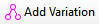
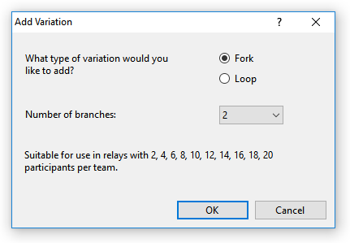

Add/Variation...
Toolbar Button:

The Add Variation command adds a variation (fork or loop) to a course.

To add a variation, select the control (or the start) where you would like the fork or loop to begin, then select Add/Variation. The following options are present:
- Type of variation: Select either fork or loop.
- Number of branches/loops: Indicate the number of branches for a fork, or the number of loops for a loop.
Once you add a variation, the left pane changes to Ordering View to make it easier to select where to insert more controls. You can then select the branch or loop you want and add controls.